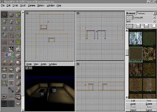
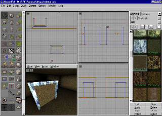
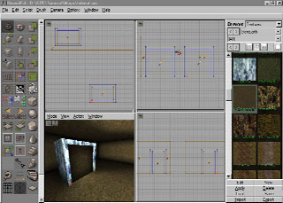
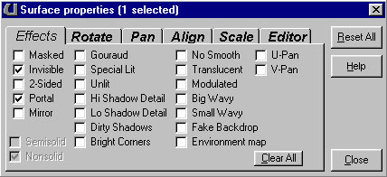
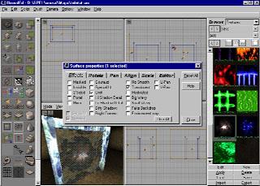

|
 |
|
|
Got a new tutorial? Mail the Portal Team!
| UnrealEd Tutorial - Creating Teleports - by Panic | ||
This tutorial will Show you how to create the awesome Teleports in Unreal. This tutorial also assumes that you already know the basics of UnrealED. *Important things to remember* - Teleports that are linked together MUST have the same Width and Height to work correct. Download the map for this Tutorial and install it in your C:\UNREAL\MAPS directory. |
||
| Building the Base Geometry | ||
Start with building two rooms, the size of the rooms doesn't have to be the same. Build two Teleports, one in each room. It doesn't make any difference how the opening in the teleport is facing, it can be facing in different directions for each room. Add a light in each room if you want to. Now you should have something looking like this:  |
||
| Start working on the Teleports | ||
Create a Sheet-brush that are covering the whole Teleport opening. Add it to the world about one grid unit (normal grid) into the Teleport opening. Now add the sheet in the same position in the other Teleport.  !NOTE! - If
you are building two Teleports that are facing the SAME
direction you will have to rotate ONE of the sheets 180
degrees so that it is facing the other way. Keep this in
mind. Two teleports facing in different directions must
have the Portal sheets in the SAME direction.Two
teleports facing in the same direction must have the
Portal sheets in DIFFERENT directions. Now turn off grid and vertex snapping and add one more sheet in each Teleport just a bit outside the first Sheet. Rotate the sheets so BOTH of them are facing outwards. Also add a light in each of the Teleports.  Now select the inner sheets and change their surface properties to act like a Portal. They will now be visible in both directions, ignore that.  Now add a cool looking texture for the outer sheets. One of the water textures for example. Edit their Surface Properties like this:  |
||
| Creating the Teleport Effect | ||
In the browser select Classes. Go to Info->ZoneInfo-> Select WarpZoneInfo and add one in each Teleport. Edit the Properties for one of the WarpZoneInfo like this:
Descriptions: This means that the other WarpZoneInfo Properties should look like this:
If you want a one-way teleport you just set the OtherSideURL on one WarpZoneInfo and leave the one on the other blank. |
||
| Finishing Up and Troubleshooting | ||
Well, Add a playerstart and you are ready to go! Here's some troubleshooting tips:
|
||
.